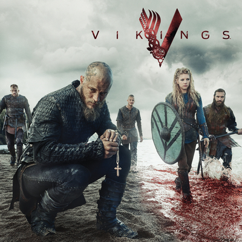
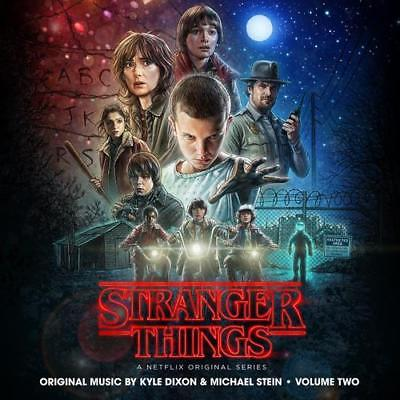
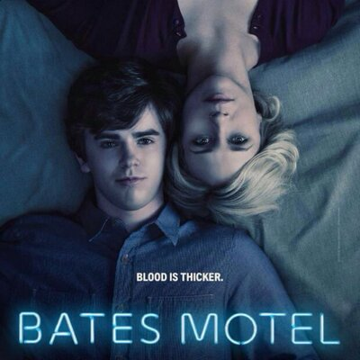
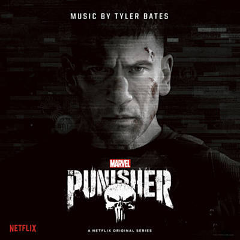

Game of Thrones
Há muito tempo, em um tempo esquecido, uma força destruiu o equilíbrio das estações. Em uma terra onde os verões podem durar vários anos e o inverno toda uma vida, as reivindicações e as forças sobrenaturais correm as portas do Reino dos Sete Reinos. A irmandade da Patrulha da Noite busca proteger o reino de cada criatura que pode vir de lá da Muralha, mas já não tem os recursos necessários para garantir a segurança de todos. Depois de um verão de dez anos, um inverno rigoroso promete chegar com um futuro mais sombrio.

Breaking Bad
Walter White (Bryan Cranston) é um professor de química na casa dos 50 anos que trabalha em uma escola secundária no Novo México. Para atender às necessidades de Skyler (Anna Gunn), sua esposa grávida, e Walt Junior (RJ Mitte), seu filho deficiente físico, ele tem que trabalhar duplamente..

Vikings
Ragnar Lothbrok (Travis Fimmel) é o maior guerreiro da sua era. Lider de seu bando, com seus irmãos e sua família, ele ascende ao poder e torna-se Rei da tribo dos vikings. Além de guerreiro implacável, Ragnar segue as tradições nórdicas e é devoto dos deuses. As lendas contam que ele descende diretamente de Odin, o deus da guerra..
SOA
Em Charming, uma pequena cidade fictícia no norte da Califórnia, nos Estados Unidos, habita o clube de motociclistas Sons of Anarchy. O grupo lida com atividades ilícitas como o tráfico de drogas e filmes pornô e é liderado por Clay Morrow (Ron Perlman) e Jax Teller (Charlie Hunnam). Além do esforço para conciliar a sua ocupação com a família e os filhos, eles tem de conviver com suas opiniões diferentes: enquanto Morrow opta pela tradição violenta, Teller se inspira no discurso revolucionário do diário de seu pai falecido..
Westworld
Westworld é um parque temático futurístico para adultos, dedicado à diversão dos ricos. Um espaço que reproduz o Velho Oeste, povoado por andróides – os anfitriões –, programados pelo diretor executivo do parque, o Dr. Robert Ford (Anthony Hopkins), para acreditarem que são humanos e vivem no mundo real. Lá, os clientes – ou novatos – podem fazer o que quiserem, sem obedecer a regras ou leis. No entanto, quando uma atualização no sistema das máquinas dá errado, os seus comportamentos começam a sugerir uma nova ameaça, à medida que a consciência artificial dá origem à "evolução do pecado". Entre os residentes do parque, está Dolores Abernathy (Evan Rachel Wood), programada para ser a típica garota da fazenda, que está prestes a descobrir que toda a sua existência não passa de bem arquitetada mentira..
The walking dead
The Walking Dead é centrado em Rick Grimes, um oficial de polícia de uma cidade no estado da Geórgia, Estados Unidos. Também acompanha a trajetória de sua família e uma série de outros sobreviventes que se uniram para manterem-se vivos depois que o mundo foi infestado por zumbis..

Strange Things
Em 6 de Novembro, 1983 na pequena cidade de Hawkins, Indiana, o garoto de 12 anos, Will Byers desaparece misteriosamente. A mãe de Will, Joyce, torna-se frenética e tenta encontrar Will enquanto o chefe de polícia Jim Hopper começa a investigar, e assim fazem também os amigos de Will: Dustin, Mike e Lucas.
13 reasons why
Uma caixa de sapatos é enviada para Clay (Dylan Minnette) por Hannah (Katheriine Langford), sua amiga e paixão platônica secreta de escola. O jovem se surpreende ao ver o remetente, pois Hannah acabara de se suicidar. Dentro da caixa, há várias fitas cassete, onde a jovem lista os 13 motivos que a levaram a interromper sua vida - além de instruções para elas serem passadas entre os demais envolvidos.

Bates motel
Após a misteriosa morte de seu marido, Norma Bates decidiu começar uma nova vida longe do Arizona, na pequena cidade de White Pine Bay, em Oregon, e leva o filho Norman, de 17 anos, com ela. Ela comprou um velho motel abandonado e a mansão ao lado. Mãe e filho sempre compartilharam uma relação complexa, quase incestuosa. Trágicos acontecimentos vai empurrá-los ainda mais. Todos eles agora compartilham um segredo obscuro.
La casa de papel
Oito habilidosos ladrões se trancam na Casa da Moeda da Espanha com o ambicioso plano de realizar o maior roubo da história e levar com eles mais de 2 bilhões de euros. Para isso, a gangue precisa lidar com as dezenas de pessoas que manteve como refém, além dos agentes da força de elite da polícia, que farão de tudo para que a investida dos criminosos fracasse..
The end of the fuking world
James (Alex Lawther) ainda não sabe, mas está prestes a mudar de vida com a chegada de uma garota nova no seu colégio. Assim como ele, a novata Alyssa (Jessica Barden) também tem problemas em se relacionar com outras pessoas e se vira muito melhor sozinha. Aos olhos alheios, são apenas dois adolescentes estranhos, para eles, trata-se da parceria perfeita.

Punisher
O crime não dura quando Frank Castle está por perto. O veterano de guerra é impiedoso na sua guerra contra malfeitores, alimentada pelo ódio gerado quando sua família foi pega no fogo cruzado durante um tiroteio entre mafiosos.

{kind=link}
{kind=link}
{kind=link}
{kind=link}
{kind=link}
{kind=link}
{kind=link}
{kind=link}
{kind=link}
{kind=link}
{kind=link}